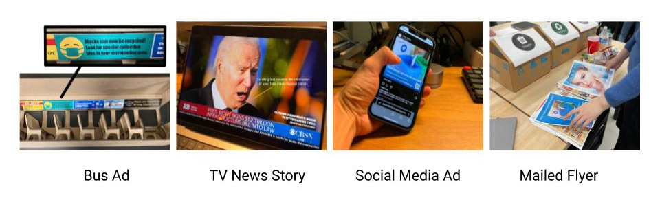

The original design question for our team was “How can we implement more sustainable ways to deposit single-use masks for Seattle and Bellevue grocery store shoppers when they are done with shopping in order to reduce local litter?” The impetus for this question was personal, we had simply observed a decent amount of mask litter within our environment. I don’t think it’s wrong to focus on a design question whose origins are so anecdotal but it did have the potential to give us tunnel vision throughout the process. My other team members, Minjee and Xiaoyang (who also goes by Sven) are comfortable working across multiple domains so our team did not have rigidly defined roles such as designer, engineer, or product manager. Our roles were only able to be delineated in hindsight and could best be split up into the theoretical framework from which we approached problems. Minjee was the dreamer, Sven was the refiner, and I was the pragmatist. I’ll expand upon these roles throughout the explanation of our process.
Because our original design question was so specific and recent, it was unsurprisingly difficult to find secondary research that was directly connected to it. The info that was directly related came in the form of news articles, soundbytes, first-hand witnesses, et cetera. To find any peer-reviewed studies within this domain, we had to expand upon what we considered to be relevant and then calibrate our understanding of that info based on how closely it was actually related to our design question. For example, we found peer reviewed studies for mask litter in places like London and Melbourne. How would we translate those findings into our local context? Melbourne has more similar demographics in terms of population, density, and driving habits but London has more similar weather patterns that could affect the degradation of the masks over time (an important factor if you’re considering how to collect littered ones).
Our field study was probably the most important step in determining the overall direction our project would take. We went to a few different grocery store parking lots throughout the county. We wanted to understand our users’ in context, uncovering their needs and pain points. To do this, we needed to observe their overall relationships with their masks.

We each developed our own system in order to efficiently collect data on where shoppers applied or removed their masks. My system involved quickly sketching the entrance of the store, and then using multiple sheets of trace paper to track shoppers over 10 minute intervals. Each of our systems worked relatively well and played to our strengths. I’m more comfortable with pen and paper than digital tools so my method allowed me the time I needed to write down any unexpected observations. During this study, we didn’t see anyone litter a mask. In hindsight this was probably to be expected. There were, on average, between 4 and 5 littered masks at each of our locations. I ended up carrying out observations for about 45 minutes. If I had seen a mask get littered during this timeframe, one could deduce that 32 masks would get littered over a 24 hour period. In actuality it would be less because the store closes for a number of hours and customer traffic ebbs and flows but the principle still stands. We didn’t really consider the expected frequency of the event we were trying to witness when determining the duration of our field study. From this point on, we started to consider transitioning away from just litter in favor of considering the repurposing of masks as a whole. Part of the reason for this is to better service the high number of single-use mask wearers who either continued to wear their masks as they left the premises or disposed of them properly. A more honest reason for this change was to simplify the quantifying and validating that would arise in the later steps of the design thinking process. If we stuck with mask litter, there would be too many variables to account for. For example, if we were to measure the effectiveness of a litter-focused prototype, the time scale over which our validation would have taken place would have been too long to observe. If we implemented collecting data within an environment before and after our intervention, how could we be sure that any changes in the distribution of litter were correlated to our prototype and not a weekly clean up crew that had swept through or an event that caused higher than normal foot traffic? I think this is one of the first violences of design thinking. When one is aware of the laundry list of deliverables they are going to generate, it really informs and directs the scope of feasible design questions.
Our survey was designed in such a way that it would be relevant if we were to continue down a litter-focused path but also provide some insights if we were to switch to a broader recycling program. How to send out our survey was one of the first sources of conflict within our team. I was opposed to posting it in a Discord chat where students were aggregating their surveys for each other to respond to. I thought that overrepresenting our peers could distort our findings. After discussing it with the team, I conceded that we would have to accept the use of suboptimal shortcuts like this in order to accomplish our deliverables with the allotted time and budget. We sent the survey out to our peers. When the results came back, respondents from the zip code in which the GIX building is located were overrepresented by 45 times their population according to the census. We tried to calibrate our understanding of the data with this in mind but it inevitably induced some myopia. On one hand, I don’t believe we were necessarily wrong to send the survey out to our peers with the constraints we were under. On the other hand, I can see the effects of similar concessions that were made in industry and how the resulting products can be exclusionary. Ex: The timekeeping system at my job only works with an app but some of my coworkers don’t have smartphones.

I brought up the point that very few respondents would admit an act considered shameful by society, littering, so we would be better served by teasing out more general feelings toward masks. One of the interesting insights gained from this is a shared sense of shame when disposing of single-use masks. This was our main justification in transitioning to our final design question - “How can we implement a system that mitigates the environmental effects of single-use masks in King County in order to transition them from landfills and litter into a usable resource?”
We cast a pretty wide net when generating the requirements for the design. When it came time to prioritize them, Minjee told us about a technique called the 100 dollar challenge in which you allocate points toward your priorities from a pool of 100. We resolved any ties that popped up during this portion via group discussion. The design requirements that we thought were most important were that our design had to scale to be able to reach a large number of people and it had to do so without a large cost or carbon footprint.
We encountered our first serious conflict as we began to crystallize possible designs that had been floating around in the back of our minds. We knew that a way to collect and process masks would be required for our project. The other group members wanted to develop a kind of smart kiosk that would guide the user through prompts when depositing it, sanitizing it with UV lights and breaking it down into its discrete parts through some type of Rube Goldberg contraption. Each device would have been expensive to develop, very expensive to produce, and would face an uphill battle surviving when exposed to the elements. It took multiple discussions across multiple days to get my point across that the degree of techno-solutionism they were proposing was violating our design requirements. The carbon footprint of each device would have been worse than the plastic it collected. The money required to develop and produce the devices would have far surpassed any income from processing the masks. We wouldn’t be able to make anything at scale. I think that the user-centeredness of design thinking is one of the core reasons that almost led us astray. My teammates thought that because we are very concerned about the end user in this process, all of our design has to take place at that location. In reality, our design role would not be to develop a flashy technology whose relevance could quickly wane. Instead, it would be to connect single-use mask wearers to the open source resources that already exist to recycle polypropylene, the main material in masks. Design thinking encourages a standalone product and can blind your ability to think in systems. As one’s design role moves toward orchestrating the interplay between existing systems, other design frameworks might handle this complexity better.
Our resulting design was a network of technologies. Simple receptacles could be placed in most neighborhoods where the masks would then be collected and transported back to a processing facility where we would use open source designs to break them down and upcycle them. The main bottleneck for our design was whether or not people would actually transition to using the bins after they had been throwing their masks away for the last two years. I brought up the contact tracing apps that sprang up at the start of the pandemic and how they were really only functional when adopted en masse; an onboarding that never really happened. Our role for the prototyping section would be that of propagandists. How would we inform people where masks could now be deposited when many are already unsure of how to separate their trash?
We made four forms of media to see what would be best at reaching people. These took the form of a bus advertisement, TV news blurb, social media post, and mailed flyer. For my part, I produced the sectioned model of a bus along with its associated ads. For our usability study, we couldn’t say to our participants, “we’re doing a study to see if you notice the signs we’ve made saying where to deposit your mask.” Instead, we had to be a bit more clandestine. We gave our participants a mock scenario in which they traveled home from their job, went to the gym, and cleaned their apartment. We periodically had them sort trash throughout the process to see if and when they noticed our mask propaganda. They were presented with the standard curbside bins in which to sort their trash. Located on the chair next to them, just on the border of their peripheral vision, was our specialized mask bin. This was done in order to replicate a real world scenario in which users might have to seek out a mask bin.
Our participants would notice that masks could now be recycled but it was unclear that they had to be deposited in a special bin. I believe the reason for this two be twofold. The first reason is that we failed to consider that the bin itself is a media object. We used greens and blues in our advertisements; colors which users already associate with traditional recycling. We likely chose these colors in our ads because we shared the internalized sense that they represent recycling and repurposing. Users would recognize that masks could now be repurposed in some way and deposit them in the bin they knew represented some form of re-use. The only user to correctly identify our specialized mask bin did so during our “control” sorting that was carried out at the start of the study, before she had been shown any of our media. In this case the bin acted as the most powerful form of media that we presented. Selecting a more unique design language for the bin itself, and maintaining that design language across our ads would more directly lead users to our bins. The second reason for confusion related to where to deposit your mask came from vague language in our advertisements. This was our first time scaling down a mock scenario. Users looked at a small model and had to pretend it was a bus or had to pretend a tabletop was their whole apartment building. We chose language within our ads such as “Specialized collection bins are located nearby” because we thought it could ostensibly represent instructions that applied to both our scaled down study as well as a real world scenario. In practice, the fuzzy center of this Venn diagram left users confused in our mini world and would have undoubtedly left them confused in the real world. Instead, we should have provided them with language that was specific to their context. The real world ad could have said, “Masks can now be recycled by depositing them in specialized collection bins. There’s likely one located in your neighborhood! Search “mask bin” on your favorite maps app to find one near you!” To translate this to the context of our study we could have said, “Masks can now be recycled by depositing them in specialized collection bins. There’s likely a collection bin on the chair to your left!”
Design thinking is an effective tool but it’s certainly not a foolproof recipe for generating a viable product. It’s primary strength is that it forces you to continually distill and concentrate nebulous feelings into concrete deliverables. This process can also help you to unlearn some of the biases or false assumptions that you bring to a project. It’s second major strength is acting as a shared vocabulary. It’s core principles can be taught in an afternoon. Those students likely won’t be competent designers but they’ll have the common language to interface with designers. It’s a beneficial tool to teach to those in managerial positions so that they can more effectively communicate with their design and research teams. I think one of the core flaws of design thinking is that because it provides such a structured framework, it can lull you into a false sense of security. Another team focusing on single-use masks proposed a mask sanitizing device. Who is the target audience for this? Who would select this over a reusable mask? For most single-use masks, the limiting factor is that they start to get fuzzy and break down on the inside; an issue which would not be resolved by this device. They didn’t talk about weather proofing so are we supposed to assume it’s located indoors? If so, are you supposed to hang out for 10 minutes without a mask while yours santizes? The project was filled with many major roadblocks but when they explained their process, each step was seemingly solid.
My group’s project was decidedly boring. We didn’t have a new gizmo or slick app (any navigation to our bins would just be done in Google Maps or something similar) but I think we did a good job of seeing the forest for the trees. I’ll continue to use some of the design thinking steps in my future career but won’t be so beholden to it that it skews any wider scope of understanding I may have of a problem.